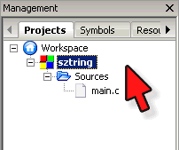
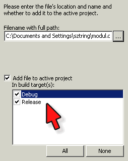
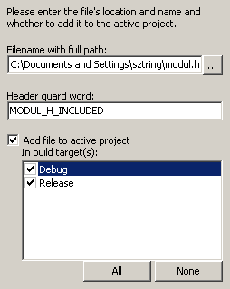

Labor, 12. hét: duplán láncolt listák
Czirkos Zoltán, Pohl László · 2015.02.18 · Frissítve: 2015.02.15
Duplán láncolt listák, többmodulos programok és fájlkezelés.
A mai órán ismét listák kezelésével foglalkozunk. Ezúttal két irányban láncolt, mindkét végén strázsával lezárt lista a feladat. A lista most szöveges adatokat (is) tartalmaz, tehát szövegfeldolgozás is része a feladatnak. Javasolt az összes függvény kidolgozása előtt rajzot készíteni: melyik pointer hova mutat a művelet előtt, és hogyan módosulnak azok a művelet hatására!
Felkészülés a laborra:
- A listákról szóló előadás átismétlése.
- A listákról szóló első gyakorlat átismétlése.
Megoldás
A lenti feladatok megoldása letölthető innen: foprogram.c, lista.c, lista.h.
1Lista kiírása
Adott a lenti programkód. Ez létrehoz egy dinamikusan foglalt, két irányban láncolt, mindkét végén strázsával lezárt listát. A lista könyvek szerzőit és címeit tárolja, valamint egy egész értéket darabszám tárolására.
#include <stdio.h>
#include <stdlib.h>
#include <string.h>
typedef struct ListaElem {
char szerzo_kereszt[51];
char szerzo_vezetek[51];
char cim[101];
int db;
struct ListaElem *kovetkezo, *elozo;
} ListaElem;
typedef struct Lista {
ListaElem *eleje, *vege;
} Lista;
void lista_letrehoz(Lista *lista) {
char *konyvtomb[][3]={
{"Rick", "Riordan", "The Son of Neptunen"},
{"Jeff", "Kinney", "Cabin Fever"},
{"Rick", "Riordan", "The Throne of Fire"},
{"Rick", "Riordan", "The Lost Hero"},
{"Shel", "Silverstein", "Every Thing On It"},
{"J. K.", "Rowling", "Harry Potter Paperback Boxed Set"},
{"John", "Flanagan", "The Outcasts"},
{"Dorling", "Kindersley", "The LEGO Ideas Book"},
{"J. K.", "Rowling", "Harry Potter Hardcover Boxed Set"},
{"James", "Patterson", "Middle School, the Worst Years of My Life"},
{"Rick", "Silverstein", "The Outcasts"},
{"Brian", "Selznick", "Wonderstruck"},
{"Jeff", "Kinney", "The Ugly Truth"},
{NULL}
};
ListaElem *akt;
int i;
/* kezdő strázsa */
lista->eleje = (ListaElem*) malloc(sizeof(ListaElem));
lista->eleje->elozo = NULL;
lista->vege = (ListaElem*) malloc(sizeof(ListaElem));
lista->vege->kovetkezo = NULL;
/* feltöltés */
akt=lista->eleje;
for (i=0; konyvtomb[i][0]!=NULL; i++) {
ListaElem *uj = (ListaElem*)malloc(sizeof(ListaElem));
strcpy(uj->szerzo_kereszt, konyvtomb[i][0]);
strcpy(uj->szerzo_vezetek, konyvtomb[i][1]);
strcpy(uj->cim, konyvtomb[i][2]);
uj->db = 1;
akt->kovetkezo=uj;
uj->elozo = akt;
akt=uj;
}
/* záró strázsához pointerek */
akt->kovetkezo = lista->vege;
lista->vege->elozo = akt;
}
int main(void) {
Lista konyvek;
lista_letrehoz(&konyvek);
...
return 0;
}
Írj függvényt, amely kiírja a képernyőre a listában tárolt könyvek adatait! Ügyelj arra, hogy a strázsaelemek nem tartalmaznak adatot, ezért ezeket nem szabad kiírni!
Írj függvényt, amely paraméterként kapja a listát, és kiírja az abban tárolt adatokat visszafelé (a végétől az elejéig haladva)!
2A lista felszabadítása
Írj egy függvényt, amely felszabadítja a listát! (Ne használj rekurziót!)
3Több forrásmodul
Az alábbiakban további függvényeket fogsz létrehozni. Érdemes a Lista
típushoz tartozó függvényeket egy külön forrásmodulba tenni. Szedd szét
ezért az eddig keletkezett programot három fájlra:
lista.h, amelyben a típus megadása és a függvények deklarációi vannak. Ez tartalmazzon include őrszemet, azaz a többszörös beépítést megakadályozó makrót!lista.c, amelyben a függvények definíciói.main.c, amelyben pedig a tesztelő programrészek lesznek (mint pl. a fentimain()függvény).
Forrásfájlt és fejlécfájlt a Code::Blocks-ban az alábbi lépésekkel tudsz hozzáadni a projekthez:
-  Válaszd ki aktívnak a projektedet, ha esetleg több projekt van nyitva. Ehhez a projekt nevére kattints a jobb gombbal, és a menüből Activate project.
- A fenti menüből File, New, File pontot kell kiválasztani, a fájl típusának pedig a
C/C++ source-t (forrásfájlhoz) vagy a C/C++ header-t.
A nyelv legyen C. A következő ablakban be kell állítani a fájl elérési
útját és nevét; legyen ez most
lista.c(lista.h). Ugyanabba a mappába kell tenni, mint a projekt többi fájljának a helye. Jelezni kell azt is, hogy az ebből a forrásfájlból keletkező tárgykódot a futtatható.exe-hez kell majd linkelni, ezért be kell pipálni az „Add file to active project in build targets” résznél mindent: - Fejlécfájl esetén a Code::Blocks automatikusan létrehozza az ún. include guard-okat,
amelyek a többszörös beillesztés ellen védenek. (Ettől függetlenül ilyet tudni kell
írni. :D) A
main.c-ben és alista.c-ben is be kell illeszteni ezt a fejlécfájlt; ezt tedd is meg:#include "lista.h"
A többi feladatot már ennek megfelelően dolgozd ki!
4Keresés a listában
Írj függvényt, amely paraméterként kapja egy listát, valamint a szerző
vezetéknevét, keresztnevét és a mű címét, és visszaadja annak a listaelemnek a
címét, amelyben a szerző műve található! Ha a keresett elem nincs a listában,
adjon vissza NULL pointert! (Mindhárom adat egyezését vizsgálni
kell!)
5Hozzáfűzés a lista végéhez
Írj függvényt, amely egy paraméterként kapott lista végéhez láncol egy új elemet, amely az ugyancsak paraméterként kapott vezetéknevet, keresztnevet és címet tartalmazza! Ha az új elem már megtalálható a listában, akkor ne fűzze hozzá, hanem csak a darabszámot növelje eggyel!
6Törlés
Írj olyan függvényt is, amely egy nevével és címével megadott könyvet töröl a listából! Ha az adott elem db adattaagja 0-nál nagyobb, a törlés a számláló értékének csökkentését jelentse, ha 0, akkor az elem tényleges eltávolítását a listából!
7Lista írása fájlba, beolvasás fájlból
Írj függvényt, amely egy paraméterként kapott nevű szöveges fájlba kiírja egy lista tartalmát; minden könyvet egy külön sorba, az egyes adatrészeket (vezetéknév, keresztnév, stb.) pontosvesszővel elválasztva! (Ha a fájl kiterjesztésének csv-t adsz meg, meg tudod nyitni a magyar nyelvű Excellel is.)
Írj egy másik függvényt, amely egy paraméterként kapott nevű fájlból új listát épít, és az elejére mutató pointert egy cím szerint átvett üres listába teszi. (Figyelj arra, hogy a lista a kiírás és beolvasás hatására ne forduljon meg!)
8További feladatok
Ha elkészültél, folytasd a feladatgyűjtemény fájlkezeléssel kapcsolatos feladataival!